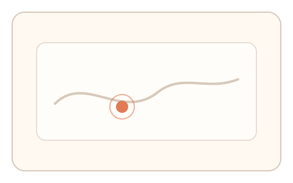
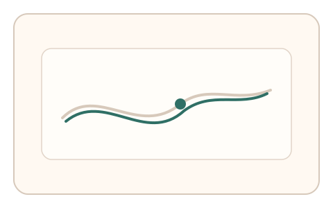
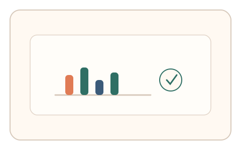

#82
Morphological Analysis - Combination Batches
已扩展
生理漂移追踪
让用户持续追踪轻微扰动目标，采集轨迹动力学与微漂移特征作为验证信号。
概念原文
用户持续追踪轻微扰动目标 5–8 秒，系统采集轨迹动力学与微漂移特征并与群体基线比对。任务结构为持续追踪，信号形态为轨迹动力学。
用“持续追踪的生理漂移”作为关键证据，脚本难维持自然波动。
研究背景
持续追踪任务会暴露人类运动控制中的微漂移、延迟与纠偏特征。脚本虽可跟随目标，但难以复现真实的生理噪声结构。
核心机制
- 目标以轻微扰动轨迹移动 5–8 秒。
- 用户持续跟随目标完成追踪。
- 采集轨迹动力学、延迟与微漂移。
- 与人类基线分布进行比对。
用户流程
- 步骤 1：用户看到移动目标。
- 步骤 2：用户持续追踪目标轨迹。
- 步骤 3：系统分析漂移与延迟并判定。
判定信号
追踪延迟与过冲
人类追踪存在稳定的反应延迟与纠偏模式。
微漂移频谱
生理噪声在频谱上具有稳定结构。
判定逻辑
延迟、过冲与漂移频谱需落在人类分布区间；过度平滑或完美跟随判异常。
对抗面
- 脚本直接追踪目标路径
- 重放真实用户的追踪轨迹
防御与缓解
- 随机化扰动模式与目标速度
- 加入随机短暂停顿降低预测性
- 叠加时序与微抖动信号进行多信号判定
可达性与风险
提供慢速模式与替代任务，允许更大目标与键盘辅助输入。
- 运动障碍用户可能出现误拒
- 不同设备采样率影响信号质量
可视化状态

状态 1：扰动目标
目标带轻微扰动移动。

状态 2：持续追踪
用户持续跟随目标。

状态 3：漂移判定
分析延迟与漂移频谱。
参考资料
Motor control
说明追踪控制的生理基础。
Physiological tremor
说明微漂移与生理噪声结构。